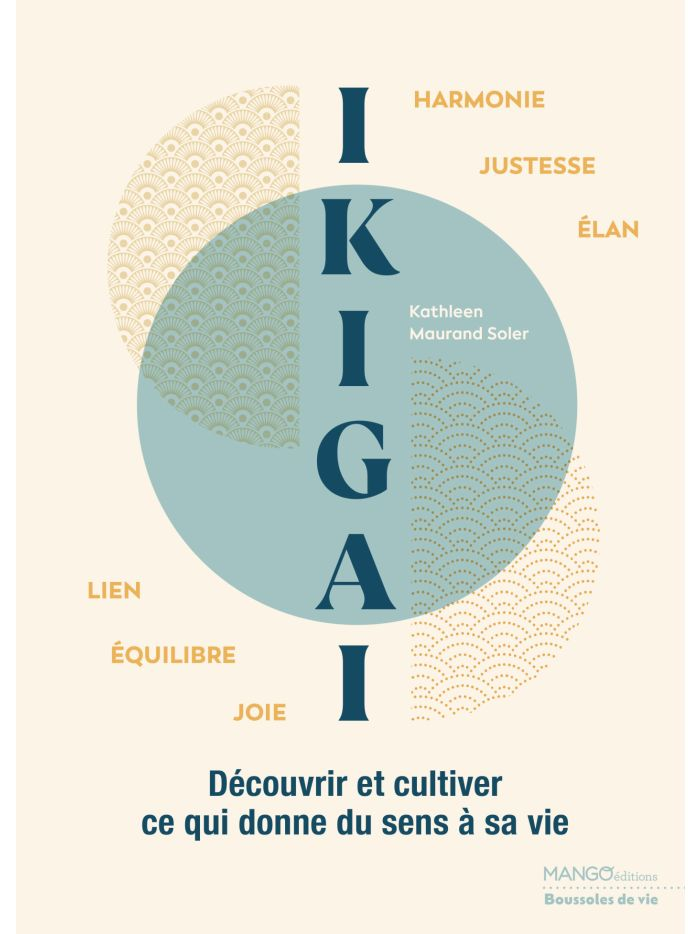
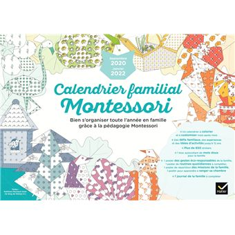
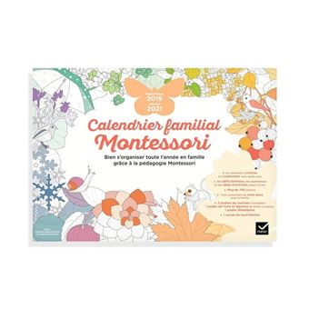

Une seule page, quatre blocs : A l'autrice, B Ikigaï, C bibliographie, D contact. Menu par ancres. Rencontres, actualités, chiffres et citation retirés.
Des ouvrages nés de la pédagogie Montessori, un livre sur la quête de sens, une salle de classe et un blog. Le même fil : donner de quoi avancer par soi-même.
Kathleen Maurand Soler écrit sur ce qui fait grandir : la transmission, la connaissance de soi et la quête de sens. Ses premiers livres, publiés chez Hatier Jeunesse, sont nés de la pédagogie Montessori et du désir très concret d'outiller les familles au quotidien.
Elle est aussi professeure d'anglais dans le Gard. Enseigner et écrire viennent chez elle du même endroit : donner à quelqu'un de quoi avancer par lui-même. Dans l'Ikigaï, publié chez Mango Éditions, elle partage un cheminement intime fait de réflexions, d'expériences et de propositions concrètes.
découvrir et cultiver ce qui donne sens à sa vie
Mango Éditions

Réflexions, expériences et pistes concrètes pour retrouver ce qui nous met en mouvement — chaque chapitre se referme sur un temps d'exercice.
Un an d'activités pour appliquer au quotidien, en famille, les grands principes de Maria Montessori.
365 idées d'activités Montessori pour organiser son quotidien, jour après jour.

Bien s'organiser toute l'année en famille grâce à la pédagogie Montessori : plannings à compléter, défis familiaux, jeux d'observation.

La première édition du calendrier : une année d'organisation familiale, de routines et d'activités à mener ensemble.
Invitation en librairie, salon, atelier, demande presse ou simple mot de lecteur — l'adresse ci-contre suffit.
Réponse sous [48 h] en général.
Des ouvrages nés de la pédagogie Montessori, un livre sur la quête de sens, une salle de classe et un blog. Le même fil : donner de quoi avancer par soi-même.
Kathleen Maurand Soler écrit sur ce qui fait grandir : la transmission, la connaissance de soi et la quête de sens. Ses premiers livres, publiés chez Hatier Jeunesse, sont nés de la pédagogie Montessori et du désir très concret d'outiller les familles au quotidien.
Elle est aussi professeure d'anglais dans le Gard. Enseigner et écrire viennent chez elle du même endroit : donner à quelqu'un de quoi avancer par lui-même. Dans l'Ikigaï, publié chez Mango Éditions, elle partage un cheminement intime fait de réflexions, d'expériences et de propositions concrètes.
découvrir et cultiver ce qui donne sens à sa vie
Mango Éditions
Développement personnel · 2026 · Mango Éditions
Pédagogie · 2019 · Hatier Jeunesse
Pédagogie · 2021 · Hatier
Pédagogie · 2020 · Hatier · sept. 2020 – janv. 2022
Pédagogie · 2019 · Hatier · sept. 2019 – déc. 2021
Invitation en librairie, salon, atelier ou demande presse : écrivez directement.
kmaurand@gmail.comRéponse sous [48 h] en général.